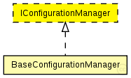

This documentation is released under the Creative Commons license
This documentation is released under the Creative Commons licenseInterface for a ConfigurationManager that configures a node according to its configuration
See also: BaseConfigurationManager
Author: Till Steinbach
The following diagram shows usage relationships between types. Unresolved types are missing from the diagram. Click here to see the full picture.
The following diagram shows inheritance relationships for this type. Unresolved types are missing from the diagram. Click here to see the full picture.
| Name | Type | Description |
|---|---|---|
| TTEEtherHost | compound module |
Module for a TTEthernet Host. Contains a EtherLLC for best-effort traffic, a TTEPHYPort module as physical port, sync module (Sync) and a TTEScheduler module. The Host is configured by the provided TTEthernet XML network configuration (network_configuration parameter) and uses the device_name parameter to find its config. The configuration is done by the BufferManager that deletes itself at runtime. |
| TTEEtherSwitch | compound module |
Module for a TTEthernet Switch with variable number of ports. Contains a configurable best-effort implementation (beRelayUnitType like IMACRelayUnit), TTEPHYPort modules for physical ports, sync module (Sync) and a TTEScheduler module. The switch is configured by the provided TTEthernet XML network configuration (network_configuration parameter) and uses the device_name parameter to find its config. The configuration is done by the BufferManager that deletes itself at runtime. |
// // Interface for a ConfigurationManager that configures a node according to its // configuration // // @see BaseConfigurationManager // // @author Till Steinbach moduleinterface IConfigurationManager { }
This documentation is released under the Creative Commons license